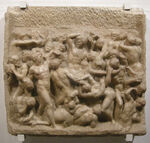
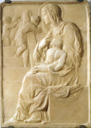
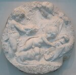
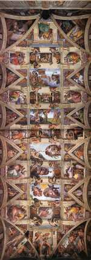
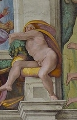
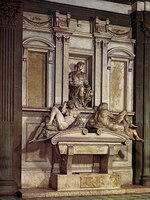
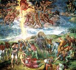

Michelangelo
Zum Vergrößern der Abbildung bitte auf das Bild klicken
1 
2 
3 
4 
5 
6 
7 
8 
9 
10 
11 
12 
13 
14 
15 
16 
17 
18 
19 
20 
21 
22 
23 
24 
25 
26 
Michelangelo Buonarroti, genannt Michelangelo
(Caprese 1475 - Rom 1564)

Einführung
Er war einer der größten künstlerischen Genies der Menschheit und hat alles Streben nach dem Absoluten und Schönen der Hochrenaissance zwar weniger beschaulich als Raffael vereinigt und vorgenommen, aber mit einer Dynamik und einem Sinn für Dramatik, welche neue Perspektiven eröffneten.
Michelangelo Buonarroti wurde in einer verarmten Adelsfamilie geboren und sich gerade in Florenz niedergelassen hatte. Die Anlagen des jungen Burschen luden dazu ein, ihn in die Werkstatt des Malers Ghirlandaio zu geben, der der berühmteste Freskenmaler seiner Zeit war. Lorenzo di Medici, der Prächtige genannt, bemerkte den Lehrling, öffnete ihm die Gärten seines Palastes und seine Akademie und machte ihn mit seiner Antiquitätensammlung bekannt. Michelangelo ging regelmäßig zu einem Kreis erlesener Intellektueller: Poliziano, Marsilio Ficino, Pico della Mirandola – die einen großen Einfluss auf seine geistige Ausbildung und sein Bestreben, ein schaffender Künstler zu werden, hatten. Die Akademie wurde von dem Bildhauer Bertoldo di Giovanni (um 1420-1491) geleitet, der sich in der Bronzebearbeitung spezialisiert hatte. Nun war Michelangelo vor allem ein Marmorbildhauer; die Studie der antiken Kunstwerke scheint also vor allen anderen Dingen bei seiner Ausbildung eine Rolle gespielt zu haben. Es verging kein Tag zu jener Zeit, an dem man bei Ausgrabungen nicht ein wichtiges Teil, das in italienischer Erde verborgen war, entdeckte: z.B. zu Beginn des 16. Jh., die berühmte Laokoon-Gruppe. Von der antiken Bildhauerei forderte Michelangelo die Wissenschaft der Komposition, der Zusammenstellung der Personen, eine harmonische Schönheit des menschlichen Körpers, ein übertriebenes Spiel der Muskulatur, er fügte aber das Trachten nach Bewegung und eine psychologische und moralische Vertiefung hinzu. Der menschliche Körper wurde zu einem Ausdrucksmittel, durch das der Künstler die Gefühle und Leidenschaften des Menschen mitteilte und weiter durch Erhebung auf die metaphysische Ebene die ganze Tragik des menschlichen Geschicks im Angesicht seines Schöpfers ausdrückte.
Die neuplatonische Bedeutung und Auslegung des Werkes von Michelangelo ist häufig erörtert worden, und dabei wollte man sogar dessen geringfügigste Einzelheiten durch diese Philosophie erläutern, was wohl ein wenig übertrieben war. Sicherlich war Michelangelo ein Künstler, der sich der Bedeutung und des Wertes, der der Botschaft seines Werkes innewohnte, bewusst war. Es steht fest, dass er sein ganzes Leben lang tief gläubig blieb, selbst als ihn die Versuchung der synkretistischen Träume ereilte. Er erlebte die Antike intensiv in ihren wieder gefundenen Werken und in ihrem Geist, wobei er sich nicht scheute, heidnische Elemente mit seinem christlichen Universum zu vermischen. Man erinnere sich des Weiteren daran, dass er in besonders unruhigen Zeiten lebte: Dieser Florentiner sah die politischen Regime in seiner geliebten Stadt schnell kommen und gehen, skandalträchtige Pontifexe auf dem Stuhl Petri (Alexander VI Borgia), die gierig und willenlos waren, einen schwankenden Glauben bei Vielen und eine Ablehnung der Orthodoxie und gleichzeitig des Autoritätsgrundsatzes. Manchmal warf man ihm vor, dass er bis an die Grenzen der Ketzerei gegangen sei, und es ist gewiss, dass sich Michelangelo in ungewissen Kreisen aufhielt. Trotz der verschiedenartigen Zerrissenheit, die sich in seinen Werken widerspiegelt, schloss er keine Kompromisse. Kaum fassbare Ereignisse brachten eine starke Unruhe in seine Vorhaben und seine Karriere; sein schwieriger Charakter, sein leicht verletzlicher Stolz, seine Wankelmütigkeit, die ihn von himmelhoch jauchzend in Betrübnis und ins tiefe Tal fallen ließen, dringen aus seinem Werk hervor, das größtenteils als unfertig, wie ein großer Fehlschlag, insbesondere bei den Skulpturen, erscheint. Nun fühlte sich Michelangelo vor allem als Bildhauer und wollte ein solcher sein. Gerade die Bildhauerei erschien ihm zum Teil deswegen als die vornehmste aller Künste, weil sie die schwerste war. Vor dem Marmorblock, aus dem es eine lebende Form zu gestalten galt, lernte er den aufwühlenden Kampf des niemals zufriedenen Schöpfers kennen. Aus einem Gefühl des Scheiterns heraus führte er häufig seine Arbeiten nicht bis zur Perfektion und bis zum Abschleifen aus, wodurch der Marmor eigentlich seinen Glanz und sein wertvolles Aussehen erhält, und hinterließ stellenweise die Meißelspuren von dem Scharriereisen in einer unebenen Mattheit, was manchmal nur mit Mühe die beabsichtigte Form erahnen lässt. Dieser Stil namens non finito umgab eine gewisse Romantik, weil er angeblich der geheimsten Pein des Meisters Ausdruck verlieh, wodurch er eine höhere Bedeutung erhielt, wohingegen die Wirklichkeit viel einfacher aussah: Michelangelo machte aus Überdruss oder Wut, dass er nicht hinbekam, was er beabsichtigt hatte, einfach nicht weiter. Er hat immer die Werke, die er als beendet ansah, mit Gewissenhaftigkeit bei der Endbearbeitung behandelt. Aber diese bruttezza (Hässlichkeit) hat Verheerungen in den nachfolgenden Zeiten bewirkt, wobei Michelangelo durch diesen mit dem Alter immer ausgeprägter werdenden Widerwillen gegen das Bis-zum-Schluss-Durchhalten das Symbol für den nicht enden wollenden Kampf des Genies gegen die blinde Zwangsläufigkeit, eine Art neuer Sisyphus also, geworden ist.
Anfänge und erste Meisterwerke
Am Anfang seiner Laufbahn, als er noch in der "Akademie" war, muss ein verschwommenes Flachrelief, Kampf der Kentauren und Lapithen (1) (Florenz, Casa Buonarroti), und als Kontrapunkt – Heidentum-Christenheit – Madonna an der Treppe (2) (Florenz, Casa Buonarroti), das voller Ausgeglichenheit ist, angebracht werden; hier erkennt er in der Relieftechnik an, was er seinem großen Vorgänger Donatello verdankt. Von Anfang an schwankt Michelangelo zwischen einer Neigung zum Dynamisch-Dramatischen und einer gegensätzlichen Neigung, die sich zum Schmerz und zu einer gewissen Lieblichkeit hin bewegt, wo man Leonardo da Vinci heraushört. Es wurde ein anderes Jugendwerk wieder gefunden, ein Kruzifix aus Holz, das von dem Prior von Santo Spirito in Florenz in Auftrag gegeben wurde, dessen Echtheit von manchen bezweifelt wird; es soll die einzige Skulptur sein, die der Künstler mit einer Polychromie versehen hat, was ein Verfahren darstellt, das zukünftig nicht mehr möglich sein wird, denn er bevorzugt die leuchtende oder matte Sanftheit des Marmors. 1492 verlässt Michelangelo nach dem Tode von Lorenzo dem Prächtigen den Palast der Medici und besucht 1494 Venedig und Bologna; er begibt sich an Anatomiestudien an Leichnamen. Er meißelt bei seiner Rückkehr nach Florenz 1495 einen schlafenden Cupido, der heute nicht mehr auffindbar ist, der aber wegen seiner Perfektion für eine antike Schöpfung gehalten wurde. Der Kardinal verpflichtet den jungen Bildhauer, eine Reise nach Rom zu unternehmen, wobei die bedrückende Atmosphäre in Florenz dieses Bedürfnis nach Ablenkung noch verstärkt. Zu diesem Zeitpunkt scheint es, dass Michelangelo in Richtung einer sorgenfreien, nicht sehr einengenden Bildhauerlaufbahn tendiert, bei der aber die in Mode befindliche Mythologie die Themen vorgibt. Er ist jedoch in Bologna verpflichtet, bei der Fertigstellung der "Arca di San Domenico" mitzuwirken, wobei diese kleinen Statuetten eines knienden Engels, des heiligen Petronius und des heiligen Proculus den Einfluss eines Meisters vom Beginn des "Quattrocento", Iacopo della Quercia, aufzeigen, von dem Michelangelo die aufgeblasenen Falten und die gezügelte Leidenschaft übernommen hat. Auf Antrag eines französischen Kardinals führt Michelangelo in Rom sein erstes Meistwerk aus, das eines seiner populärsten Werke ist, nämlich die Pietà des heiligen Petrus (3), die 1972 durch ein Attentat entstellt wurde. Das Thema und die Komposition sind ungewöhnlich, nordischen und nicht italienischen Ursprungs, wobei aber der Künstler aus dem Marmor ein erlesenes und erschütterndes Gedicht zaubert. Das reine Gesicht der Jungfrau (das erstaunlicherweise sehr jung dargestellt wird und so alt wie das des zu Tode Gemarterten erscheint) senkt sich würdevoll über den verlassenen, aber nicht zerfallenen Körper Christi, der im Tode schön wie ein Adonis erscheint und dessen harmonische Anatomie, die durch die bewundernswerte Drapierung des großen, von der schmerzgeplagten Mutter so abgenommenen Mantels, als wolle sie aus diesem ein Leichentuch machen, hervorgehoben wird. Dieses Jugendmeisterwerk, aus dem die Virtuosität des Bildhauers und seine vibrierende Sensibilität hervorstrahlen, ist auch die einzige Skulptur, die dieser hochmütig auf dem Streifen gezeichnet hat, den die heilige Jungfrau quer über die Brust trägt. Etwa zur selben Zeit, als Michelangelo dieses Heiligenbild behaut, arbeitet er an der heidnischsten seiner Figuren, einem trunkenen Bacchus (4) (Florenz, Nationalmuseum Bargello), ein schwankender schöner Jüngling, hinter dessen Rücken sich ein ironischer kleiner Satyr über ihn lustig macht. Der Künstler übertrifft von nun an durch seine Inbrunst und durch die Intensität des Lebens seine antiken Modelle.
Da nun die Statuetten für den Piccolomini-Altar in dem Dom von Sienna umstritten sind, ist die Vermutung aufgestellt worden, dass die heilige Jungfrau der Liebfrauenkirche in Brügge (5) ursprünglich für diese Gruppe gedacht gewesen sei und das Ausführungsdatum um etwa 1500 liege. Die schöne ovale Gesichtsform hat hier einen schmollenden Ausdruck. Dasselbe Thema der heiligen Jungfrau mit Kind inspiriert immer noch in der Form des in Italien modernen tondo, einer Rundkomposition, den Bildhauer zu zwei charmanten Werken, in denen er (um danach niemals mehr darauf zurückzukommen) die Möglichkeiten des Flachreliefs ergründet, den tondo Pitti (6) (Bargello) und den tondo Taddei (7) (London, Royal Academy) nach den Namen der Familien, die die Bestellung aufgegeben haben. Zur selben Zeit erinnert sich Michelangelo daran, dass er das Malen erlernt hat und schafft in der gleichen Rundform den tondo Doni (8) (Florenz, Uffizien), auf dem eine heilige Familie mit seltsam geraffter Wirkung für die kniende heilige Jungfrau und nackte Faune im Hintergrund dargestellt werden, deren Anwesenheit sich in dieser religiösen Szene allegorisch erklären lässt (das Heidentum, dass dem Christentum weicht?) In diesem ersten bekannten Gemälde zeigt Michelangelo einen erstaunlichen Sinn für das Herausarbeiten der Formen und ein Streben nach den ursprünglichen Farbtönen. Es folgt jedoch ein anderes Meisterwerk der Bildhauerkunst. Als er wieder nach Florenz zurückgekehrt ist, wohin ihn eine ruhelose geheime Sehnsucht getrieben hat, entwickelt Michelangelo aus einem Marmorblock, der zuerst für eine Domstatue gedacht war, aber für zu dünn gehalten und daher aufgegeben wurde, einen riesigen David (9) (1501-1504; die Statue ist mehr als 4 m hoch) in heroischer Nacktheit, der lässig über die Schulter gelegt seine Schleuder, Bildnis für die siegreiche Jugend, trägt, bei der der Künstler bravourös die fehlende Dicke des Blocks überwunden hat. Der David erhält die Ehre, vor dem Palazzo Vecchio (heute in der Accademia) aufgestellt zu werden. Der Ruf von Buonarroti macht aus diesem von nun an den am besten bekannten Künstler von Florenz. 1503 beauftragten ihn die Herrschenden mit einer großen Freske zur Verzierung des Ratssaales: Michelangelo behandelt darin in bewegten Gruppenbildern die Schlacht von Cascina, die heute verschwunden ist. Zur selben Zeit wird ihm die anspruchsvolle Aufgabe übertragen, für den Dom zwölf Apostel überlebensgroß in Stein zu meißeln. Von diesem Großvorhaben bleibt nur der heilige Matthäus (10) übrig, der schlecht herausgearbeitet worden ist (Florenz, Accademia).
1505 ruft der aufbrausende Papst, Julius II. (Giuliano Della Rovere), Michelangelo nach Rom und beauftragt ihn mit der Errichtung seines Grabmals. Dies ist der Anfang eines lang andauernden und schmerzvollen Unterfangens, das – wie die Medici-Kapelle in Florenz – den Künstler während seines ganzen Lebens verfolgen und bedrängen wird, ohne dass dieser eine würdige Lösung für das ursprüngliche Vorhaben findet. Für das Grabmal des Pontifex ist die Peterskirche ins Auge gefasst, der damals mitten im Neubau stand, als auch sogar ein Ehrenplatz unter der geplanten Kuppel. Michelangelo zieht ab diesem Moment den erbitterten Hass des großen Architekten Bramante auf sich. Diese Gegnerschaft wird ihn lange verfolgen und kam seinen Unternehmungen nicht gelegen. Julius II. selber ändert seine Vorstellungen, bestellt bei dem zögernden Buonarroti eine riesige Bronzestatue von sich selber, die die Fassade von San Petronio in Bologna zieren und die Unterwerfung der Stadt unter den päpstlichen Willen symbolisieren soll. Diese Bronzewerk, das eine Ausnahmestellung beim Wirken des Künstlers darstellt, fiel dem Schicksal politischer Unmutsäußerungen anheim: Gleich bei der ersten Rebellion wird sie umgestürzt und eingeschmolzen.
Die Decke der Sixtinischen Kapelle
1508 hat Julius II. eine neue Idee. Er beauftragt den Künstler, dessen Genie er erahnt hat, mit der Verzierung der Decke der Sixtinischen Kapelle. Michelangelo erhielt die Erlaubnis, dieses Programm durch das Malen auch der Fresken in den Rundöffnungen der Fenster und in den Eckverblendungen zu vervollständigen. Auf den Mauern erinnerten die früheren Fresken an Szenen aus dem Evangelium und dem Leben Moses. Das Programm, das Buonarroti zufällt, umfasst die Geschichte der Menschheit seit ihrer Schöpfung bis Moses, d.h. symbolisch die Welt vor dem Sündenfall, dann die angsterfüllte Erwartung der Erlösung. An der Decke selber umfassen die Fresken neun große rechteckige Gemälde, die die Schöpfung, die Erbsünde und die Geschichte Noahs (11) darstellen. Die Szenen der Schöpfung sind gerechtfertigterweise die berühmtesten, insbesondere diejenigen der Schöpfung von Mann und Frau, bei denen der Künstler mit einer verringerten Personenzahl den Gemälden eine dramatische Intensität und eine epische Größe verleiht, aber auch eine unerreichbare emotionale Tiefe. Der Blick des ersten Menschen, der gleichzeitig zögerlich und hingerissen ist, ist unvergesslich, was nicht weniger auf die so erhabene und feinfühlige Geste des Schöpfers zutrifft, der kaum seinen Finger berührt, um ihm Leben einzuhauchen (12). Es ist deutlich, dass Michelangelo mit den traditionellen Bildern gebrochen hat, um wirklich eine persönliche Kosmogenie zu schaffen, in der er die ganze Kraft seines Glaubens und die gesamte Leidenschaft seines Temperaments zum Ausdruck bringt. Er schafft auch einen ihm eigenen Kanon. Körper mit einer übermäßigen, unmenschlichen und manchmal fast monströsen Muskulatur: es handelt sich dabei aber um eine Geschichte jenseits der normalen Menschheit, an die er durch seine maßlosen und rasanten Formen denken lässt. An dem Gesims, das die biblischen Szenen umrahmt, sitzen nackte Jugendliche in verschiedenen Haltungen und mit aufmerksamem Blick: Es handelt sich um die Ignudi (13), ursprüngliche Schöpfungen von Michelangelo, in die er sein sehnlichstes Streben nach Schönheit des menschlichen Körpers gesteckt hat, Mittler ohne Beleg in der heiligen Schrift zwischen Himmel und Erde, Archetypen unserer Leidenschaften und Fähigkeiten. Diese mysteriösen, ideellen Wesen, die auf der Suche nach einer Identifikation mit dem Göttlichen sind, beziehen sich wahrscheinlich auf die neuplatonischen Theorien, von denen Michelangelo durchdrungen war. Weiter unten zwischen den Rundöffnungen und eingerahmt von vorgetäuschten Pilastern, die von den Putten getragen werden, die als Atlanten dargestellt sind, erinnern zwölf sitzende Figuren abwechselnd an Propheten und Sibyllen. Auch da wird die Verwünschung der Menschheit durch die Ankündigung der Vergebung abgemildert, aber die Ernsthaftigkeit und die Nüchternheit der Personen lässt kaum einen Funken Hoffnung aus dieser kompakten Mauer der Angst und der Pein durchscheinen. Die Anmut ist fast immer abwesend, selbst bei den weiblichen Figuren; die enorme Sybille von Cumae (14) löst mit ihren knorrigen Armen eines Jahrmarktringers eher eine starken Abscheu aus. In den Pendentifs mit vier Winkeln befinden sich Episoden aus dem Alten Testament (David und Goliath, Judith und Holopherne...), die sich auf die wundersamen Errettungen Israels, des erwählten Volkes, beziehen. In den kugelförmigen Dreiecken oberhalb der Fenster gehörten Menschen, die ein wenig zusammengekrümmt sind, wohl zu heidnischen Familien, die außerhalb der Offenbarung gefallenen sind; schließlich erscheinen in den Rundöffnung beidseitig dieser Fenster sitzend die Vorfahren Christi (15); ein weiterer Schritt in Richtung Erlösung.
Vom Grabmal für Julius II. bis zur Kapelle der Medici
Die immense Arbeit an der Decke der Sixtinischen Kapelle lastet bis 1512 schwer auf den Schultern von Michelangelo. Im folgenden Jahr stirbt Julius II. und wird durch einen Medici ersetzt, nämlich Leon X., der keine Zuneigung zu Michelangelo verspürt und den er als Republikaner verdächtigt. Der Künstler begibt sich wieder an die Arbeit am Grabmal des verstorbenen Pontifex. Zu Beginn sollte dies ein unabhängiges Bauwerk in Form einer Pyramide mit Statuen von Gefangenen und Siegen auf der unteren Ebene werden, die die Kämpfe des Lebens, aber auch die Freien Künste symbolisieren. In der Mitte sitzen kraftvoll Moses und der heilige Paulus, d.h. das alte und das neue Gesetz und auf dem Gipfel der liegende Papst, der von Engeln gestützt wird, die ihn in die ewige Herrlichkeit führen. Mit dem neuen Vertrag von 1513 mit den Erben ändert sich das Schema durch Vereinfachung und verringert sich die Anzahl der Figuren und wird das Monument an die Wand angebaut. An dieser zweiten Version verbinden sich die zwei Sklaven (16) des Museums des Louvre, die sich in ihren Verbindungen mit einer Leidluft erörtern, die nicht nur physisch ist. Diese zwei Skulpturen entsprechen einer seltenen gleich nachgeahmten ausdrucksvollen Kraft. Der Künstler beginnt mit dem schrecklichen Moses, mit einer gewaltigen Muskulatur und einem faszinierenden und rasenden Blick, einer eindringenden und übermenschlichen Kraft. Eine neue Veränderung, im Jahre 1516, bewirkt eine Reduzierung der Größe der Gefangenen: Es handelt sich lediglich um skizzierte Statuen, aber dennoch behexend.
Das Grab von Julius II erinnert an einen unermesslichen Schiffbruch. In der Zwischenzeit, im Jahre 1517 beschäftigt Michelangelo mit Begeisterung mit einem neuen Auftrag, die Fassade der Kirche von San Lorenzo in Florenz (17). Ein großartiges Projekt sowohl in Bezug der Architektur als auch der Skulptur, die ihm sogar gleich sieht. Leon X vertraut ihm im Jahre 1520 die Konstruktion und die Dekoration der Begräbniskapelle an, die veredelt auf derselben Kirche, zwei Monumente als Erinnerung an Giuliano de Medici (18) schützen soll, Herzog von Nemours und Lorenz (19), Herzog von Urbino, beide große Verteidiger des bischöflichen Thrones. Der Künstler überschreitet das Programm für die Verherrlichung der Medicis, indem er ihm eine großartigere und allgemeine Bedeutung gibt, in der man einmal mehr die neuplatonischen Ideen erkennt, an die er sich während seiner Jugend genähert hatte, mit der Tendenz, sich stets der Probleme der Menschheit zu befassen. Die Architektur erinnert wegen ihrer Struktur an die Sakristeien des 13. Jahrhunderts. Man findet dort vor allem den Teil, der aus dunklerem Stein besteht, der Serenastein, die architektonischen Linien, aber man fühlt dort eine neue Kraft und einen neuen Dynamik. Die Begräbnisdenkmäler besetzen zwei Seiten des Vierecks und nehmen dasselbe pyramidenförmige Schema an: In einer rechteckigen Nische erinnern die zwei Statuen der Prinzen, bei denen es sich in Wirklichkeit um feierliche und idealisierte Porträts handelt, die die Rüstung der römischen Kapitäne tragen: Giuliano, jung und energische, stellt die Aktion dar, mit dem Gesicht in vollem Licht. Der Blick von Lorenzo, hingegen, bleibt im Schatten seines Helmes versteckt; Lorenzo meditiert. Seine die Hand, im unteren Teil der Darstellung, scheint besorgt und mysteriös. Ein Symbol des Gedanken, der den Menschen auf sich selbst abwälzt. Zu den Füssen der beiden Darsteller liegt ein Sarkophag, die aus zwei zusammengerollten Deckeln besteht. Auf diesen befindet sich die Darstellung von vier nackten Figuren, die ungünstig nebeneinander liegen, mit den Gesichtern, durch Verdrossenheit und Leiden verwüstet. Ein Ausdruck, der die Qualen der menschlichen Seele im Laufe des Lebens ausdrücken. Diese Figuren entsprechen der Allegorien der vier Abschnitte eines Tages oder wenn man will, der Zeit, die vergeht: Der Tag, die Nacht, die Dämmerung, männliche und weibliche Darsteller, von denen einige noch „nicht beendete“ Oberflächen darstellen. Es stimmt zwar, dass es sich nicht um Michelangelo handelt, ist, der die Monumente in Stelle stellte, und dass einmal mehr dieses umfangreiche Programm Wechselfälle und Verstümmelungen kannte. Michelangelo sah insbesondere, im unteren Stockwerk, die antiken Flussdarstellungen vor, die nicht einmal skizziert wurden (die Akademie von Florenz bewahrt ein Modell aus Lehm auf) und auch Fresken in den höheren Etagen. Im dritten Teil der Kapelle steht die Jungfrau Medicis, welche versucht, die das Toben des Kindes Jesus zurückzuhalten, das auf ihren Knien sitzt und somit nicht mehr die melancholische Weisheit der Jungfrauen des Vatikans und aus Brüggen darstellt, sondern eher die Darstellung von Leidenschaft und Traurigkeit darstellt, geäußert durch diese verletzte Darstellung von brutalem Gesichtsaudruck.
Sie kommen jedoch von der Verwirrungs- und Gewaltzeit vor. Eine Volksmacht besetzt Florenz; Im Jahre 1527 ist es der Sack von Rom, und die humanistische Zivilisation der Renaissance die unter dem Hieb neuer Barbaren zusammenzubrechen scheint. Der Künstler fühlt zutiefst diese Ereignisse, die zu seinen inneren Dramen und zu den mehrfachen Hindernissen hinzukommen, deren sein Werk Opfer ist. Im Jahre 1530 widmet sich Florenz dem nachsichtigen Papst VII. Bald fühlt sich Michelangelo nicht mehr zuhause in Florenz, das er im Jahre 1534 definitiv verlässt (ohne die Gräber der Medicis vervollständigt zu haben), um nach Rom zu ziehen. Dort steht das Denkmal von Julius II (20), für ihn ein Alptraum geworden. Im Jahre 1532 löst sich der Künstler vom müden Krieg einer ziemlich erbarmungswürdigen Vereinbarung: Unzulängliche Schüler nehmen an der Endbearbeitung des Denkmales und an seiner Einführung in der kleinen Kirche San Pietro in Vincoli, ein nicht proportioneller Bau, teil. An zwei neuen Statuen des endgültigen Denkmals arbeitet Michelangelo nur teilweise: Rahel, die das kontemplative Leben darstellt, und Lia das Berufsleben. Beide sind geprägt durch eine Tendenz zum Klassizismus, dem sich der alternde Künstler sich anschließt. Es gibt keine Sklaven mehr, und die für diese große, ursprünglich bestimmte Gruppe des Sieges, bleibt in der Werkstatt (heute im Palazzo Vecchio von Florenz); Seine lehrreiche Konstruktion „in Flammen“ wird die ganze manieristische Skulptur leiten. Schließlich die Teile von werden Moses unheilbar durch den Ort verfälscht, einer Wohnung, die nicht mehr zu ihm passt.
„Das letzte Urteil“, die Architekturarbeiten
Die verfinsterte Laune, der steigende Pessimismus des Künstlers verraten sich in der großen Freske von das letzte Urteil, die von 1536 bis 1541 auf Antrag von Paul III Farnese ausgeführt wurden, um die Mauer des Grundes der Sixtinische Kapelle zu bedecken. Die Farbtöne sind dunkler als auf den Fresken der Decke; Der Christrichter, der einem etwas stämmigen Apollo gleicht, ist beunruhigend und Teil des Kunstwerks scheint einem verfluchten Schicksal gewidmet. Die ziemlich wirre Zusammensetzung leidet schließlich unter der Nachbarschaft des Meisterwerks der Reife. Wie in seiner Pietà ist es dort noch ein mittelalterliches Thema, das Michelangelo neu annimmt und erweitert und die Erinnerung an Dante und das Altertum wieder auferwecken (der Kahn von Karon). Die Qualen der Hölle enthüllen eine dermaßen krankhafte Vielseitigkeit und außerdem die Erfindung eines römischen Trommelfells aus dem 12. Jh. Die Vertreter benötigen die Hilfe der Engel und der Heiligen, um sich schmerzvoll am Paradies zu hissen. Diese umfassende Gesamtheit hat mehr erreicht als der Rest, um den Ruf der „Schrecklichkeit“ von Michelangelo festzulegen. Man weiß andererseits, dass im Jahrhundert nach den schockierenden, heldenhaften Nacktheiten der Wiederauferstehung, das Hinzufügen von Unterhosen ein Muss wurde, um den Anstand zu retten!
Das lange Altsein des Künstlers geht nicht gänzlich in die Bitterkeit unter; Bis zum Ende bleibt Michelangelo aktiv und nimmt am künstlerischen Leben seiner teil, von seinen Schüler zum Teil befürchteter Patriot, der schon durch seinen Mythos eingedrungen war. Er knüpft Freundschaften mit dem römischen Kreis, insbesondere mit der Dichterin Vittoria Colonna (1492-1547), in denen er ein wenig der Atmosphäre der großen Debatten, die in den Gärten der Akademie stattfinden, wieder findet. Er schrieb selbst seit langer Zeit Gedichte, die wie seine Briefe uns über seinen Gedanken insbesondere hinsichtlich der platonischen Konzepte informieren. Das Brustbild von Brutus (21) (Florenz, Bargello), stellt ein ideales Bildnis eines Tyrannenmords dar, das er zu dieser Zeit haute. Die Spiegelung dieser römischen Freundschaften. Michelangelo unternimmt für die Paulinerkapelle (im Vatikan) zwei neue und große Fresken, Verwandlung des Heiligen Paul (22), der von seinem Pferd umgeworfen wurde, und die Kreuzigung des Heiligen Petrus (23), aber auch hier geben vor allem die Hände der Schüler einen ausschlaggebenden Beitrag an der Ausführung.
Probleme und Projekte der Architektur nehmen immer mehr seine Zeit in Anspruch. Auf diesem Gebiet sind seine zwei besten Erfolge das Vorzimmer und die Treppe der Laurentiner-Bibliothek in Florenz, begonnen im Jahre 1523, aber die nur im Jahre 1560 gemäß Planung von Bartolomeo Ammannati (1511-1592) vollendet. Gemäß seinen Skizzen, werden in Rom Thermalbäder in Kirchen umgewandelt (Santa Maria degli Angeli, 1561-1566) wie auch der Farnesenpalast mit seinem kräftigen Kranzgesims im letzten Stockwerk. Ab 1538 arbeitet man unter seiner Leitung an der Vollendung des Jupiterplatzes; Drei Paläste begrenzen den Platz, geschmückt mit mächtigen Säulen, die die Fassaden rhythmisieren und beleben, bedeckt von starken Schatten. Diese dynamische Struktur verpflichtet die Architektur, die zum Teil wegen der Szenenwirkung oder der Skulpturen in barocken Richtungen führen: In der Mitte des Platzes, steht Mark Aurelius zu Pferd. Am Eingang verschiedene antike Skulpturen. Schließlich, was nicht wenig zur Ehre beitrug, lieferte Michelangelo die Zeichnung der bekannten Kuppel von San Pietro. Offizieller Architekt der Basilika im Jahre 1546 erreichte er es jedoch nicht, diese zu beenden, weil Freunde seines Vorgängers, Antonio von Sangallo junior, ihm in den Weg kamen. Später wurde die Außenfassade nach einem anderen Profil wieder aufgebaut. Der gewaltige und eindrucksvolle Eingriff in San Pietro, trägt außerdem das Zeichen eines weiteren Genies mit dem Namen Bernin, der instinktiv eine tiefe Übereinstimmung mit seinem Vorgänger wieder fand, den er übrigens maßlos verehrte.
Die Mitteilung des Bildhauers
Aber Michelangelo vergaß die Leidenschaft seines Lebens und seiner wahren Berufung nicht, die Skulptur. Bis zu seinem Ende verfolgte er seinen epischen Kampf gegen den Marmor. Die Idee des Todes suchte ihn heim, und diese an seinem Christenglauben so übereinstimmende Meditation, verstärkt durch das Alter, wandte von neuem an dieses Pietàbild, das ihm seinen ersten Meisterwerk verschafft hatte: Dies ist genauer ein Abnahme (24) das er gegen 1550 anfängt, dass für sein eigenes Grabmal (Dom von Florenz) bestimmt ist. Die Formen sind noch einmal alle original. Dieser verrenkte Körper, in Zickzack, vom Christus, von dem es kaum den zwei Frauen jeder Seite gelingt, die gespenstische Figur zu enthalten, hat man dort ein Selbstbildnis gesehen, von Nicodemus oder, gewissen Kritikern, von Joseph von stehendem Arimathie von hinten, als ein Gott zufolge der Vater in gewissen germanischen Trinitäten, beziehen sich auf kein italienisches Schema der Zeit, und, dies ist von neuem, er scheint, gegen die nordische Welt, dass er sich drehen muss, um ein Echo dieses Expressionist Mystizismus zu finden und halluzinieren muss. Der letzte Versuch, von neuem ein Schmerzmann, der aufrecht gegen die Jungfrau auseinander genommen wird, Pietà Rondanini (25), Mailand, Castello Sforzesco, ist bemitleidenswert und niederschmetternd. Der Künstler, der schon einen wütenden Hammer gegen die Pieta der Kuppel gerichtet hatte, und somit ein Bein des Christus beseitigt und die Arme gebrochen hatte, gleicht durch die Verzweiflung eines letztmöglichen Kunstwerks an einer Gespensterart, die gewünschte Form zu erhalten, Angst vom Misserfolg und das Nichts mit einem lächerlichen gehangenen Mitglied zu bereuen, er scheint in der Leere als ein Behindertenvotivbild.
Dies ist nicht sicher dieses letzte Machtlosigkeitsbild – so von dermaßen von unseren Zeitgenossen geschätzt - das er an unserer Meinung passt, zurückzuhalten, aber das Meisterwerk seiner Jugend und der Reife, die durcheinander gebracht werden, wird die Kunst der Zeit durch ihre Spannung, durch ihr Fieber, durch ihre unbezähmbare Energie angezeigt. Von dieser gequälten Kunst, jedoch eine geniale Erfindung der Formen, musste der manieristische Strom fließen, geboren in Florenz unter dem gleichen Patronat des Meisters und zur Ausbreitung in ganz Europa bestimmte. Michelangelo, der Erfinder der „Serpentinen-Linie“ stellt eine die essentiellen Züge des Manierismus dar. Mehrere seiner Werke verdienen das Attribut von Manierist, als sie Viktor, von Herkules und Cacus (Florenz, Haus von Buonarroti) und das Christ von Santa Maria über Minerva (26), in Rom, schön wie ein antiker Held (1519-1521). Schließlich würde der pathetische Michelangelo, später den Barock gebären, dessen Meister in Buonarroti einen geistigen Vater erkennen werden.
Michelangelo starb als Neunzigjähriger, voller Ruhm, und in Rom bereits als Legende bekannt. Jedoch wurde er in seiner wahren Heimat, Florenz, begraben, wo er nach wie vor ruht.

© 2006 Umanista.Net